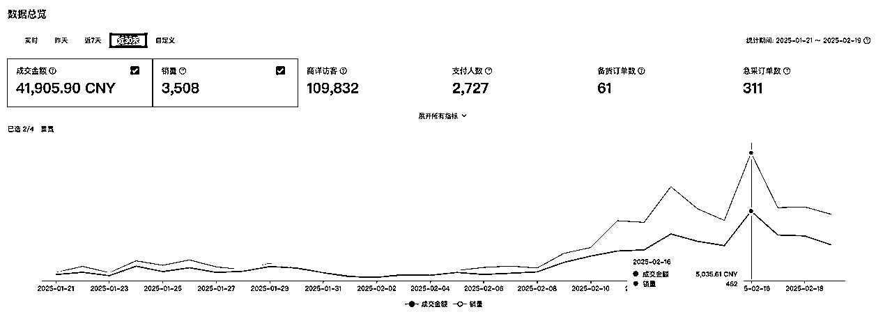
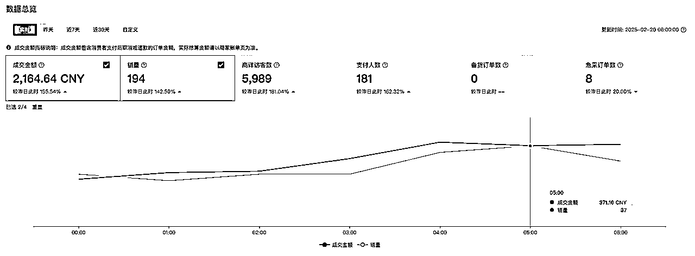
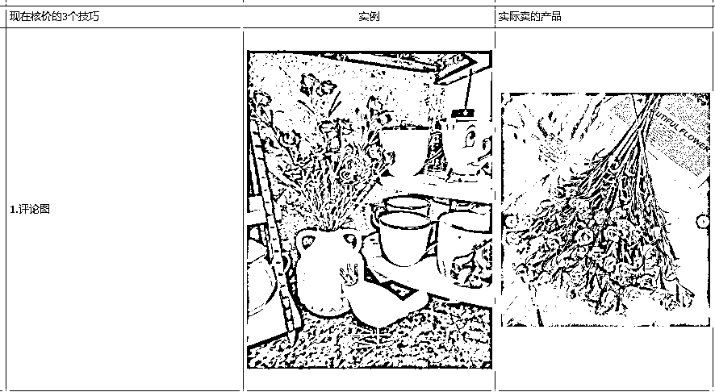
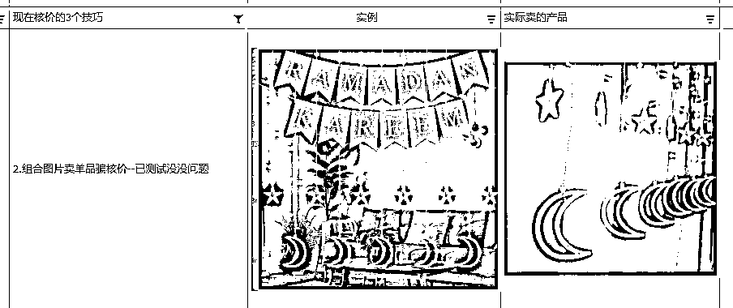
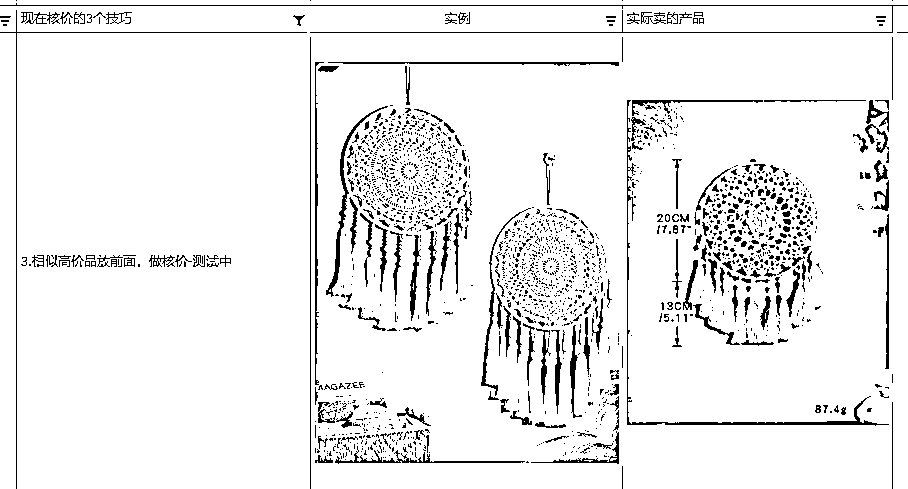

来源：https://a07ysutom0.feishu.cn/docx/Jprfd8iiBoGP2GxQPTkcTvGLnJb
大家好！我是rain，现在在深圳光明区，日本硕士毕业，计算机专业出身，之前和朋友创业做中东电商，从无到有，两年做到年销售额 2000 万，我主要负责数据获取，电商工具，数据分析。电商数据获取有日百万 sku 抓取的经验，并稳定运行两年以上。
所以当这次跨境的航海开的时候我很激动，感觉可能好像可能有我用武之地，立马报名 Shein 航海，主动加了小善，并由于做过数据获取和分析工作，整个航海还没开始的时候，就已经深入的开始面基做这个电商平台的数据分析工作了。
由于提前开始干活了，所以航海开了，我是第一个进入高中组，成功选品5个通过，只用了两天的时间，其实是我抢跑了~
我们组的店铺是12月20日开始运营，到今天刚好运营了两个月，总成交额现在4万了，贴个近30天的历史销售额截图。


数据口径的说明，我再加三个组员。时间口径是，12月20日到2月20日，中间有20天因为过年工厂所有都放假，我认为不算，所以合理时间口径40天。
四个人兼职操作，其中有两个组员之前没有接触过电商，有一个组员做过Ozon，有跨境电商经验。
销售额 41905，时间 40 天。单日最高 5035，目前店铺毛利大概是销售额*20% ，单日毛利最高 1200。
先说一下自己做得不足的地方
第一，在过年期间，由于没干过，潜在爆款备货太少。有一个爆款（当时不知道是个大爆款），备货了15天的量，没想到工厂开始放假，第二天就卖完了。备货15天的量只卖了两天，后面由于太久没有补上货，导致链接断供下架了。
这也说明了shein如果只是选品选得好还不够，还得有一个稳定高效的供应链。后面有两个爆款也遇到了类似的问题（见图1.⬆️ 2 月 17,18 日数据），产品生产速度太慢，导致供货出现问题。
第二，在带团队方面缺乏一些经验，只带了三个人，这两天又新增了5个人，希音这个项目我认为难度最主要就是定性，也就是你要克服语言，新平台的规则，以及这个平台上架失败都需要10天后才能反馈给你的时间，所以入门比较难，但是门里面的竞争难度没那么大，销售额稳定增长。
Shein 选品其实不难，对于我这个程序员思维的人来说，主要逻辑是找到当前海外各个电商平台最近畅销的新品，因为老品大概率已经被占坑了，我们比不过他们货品的供应能力，链接相对他们几百几千个评论也没有任何优势，所以主要去寻找最近热卖起来的新品。有了方向，实施就去去解决这个方向上的障碍点了。一般我们会首先通过平台的机会商品来判断平台最近的需求走势，通过翻阅机会商品，查找当前的平台急需产品的关键词。比如说，当平台要开始做中东斋月品，就会在机会商品里面推很多中东斋月节相关的产品需求。我们去对应的平台上找对应的产品，去 Temu 或者亚马逊沙特站，阿联酋站，noon 上去寻找里面新上架的热销品。最近平台开始推复活节的品，我们就会去 Temu，亚马逊美国站，英国站上去寻找复活节的热销品。
怎么找到新上架的品可以通过市面上的各类插件，有 Temu 选品助手，卖家精灵等等。还有一个技巧就是，越是比较早捕捉到平台需求，越容易获得较大利润，因为平台在推新活动早期相关的产品很少，所以核价容易核出我们利润满意的价格，当越来越多的商家向平台提交这些活动商品后，平台后面因为相关的产品太多了，开始择品，就会导致后面对产品的要求更高，核出来的价格自然也更低。
上架也需要重视，因为全托管没有付费竞争手段，所以精品上架做更好的点击率，就是最主要的竞争手段。
再来讲讲上架吧！上架的细节很多，首先是标题，一般标题需要注意标题结构和书写规范。如果能够注意下面几点基本上就没问题。
1、标题内容：数量容量+核心关键词（亚马逊）+卖点词+组合词+长尾词（Temu）
2、注意英文书写规范
3、相关性，要跟我们的产品实际相关，不相关的词不要硬搬
大家可以多多参考同行的优秀标题。难度不大，就是各种词语的排列组合，顺序调换，参考上述基本规范一般都能写出一个不错的标题。
1、相册、挂画、灯串等，尺寸大小长度相对重要的产品需要标出
2、聚合上新，文字都是英文或字母
可以多选择一些规格，后期有操作空间（尽量选两到三个次规格）
平台当前图片的比例要求有两个 1340*1785（3:4） 和 900*900（1:1）
1、制作核价图-AI制图
2、尺寸图
不同图片的作用不同，大家可以参考不同位置图片的特点来做自己的产品图，更容易达到自己想要的效果。
轮播图，主图第一张：骗点击（一般点击率在4%为一个不错的点击图）
主图2-5张图（系统核价，促进转化）- 浴室，厨房，墙上，桌子上，等商品在不同场景下的图片
主图6-11张（促转化）-- 细节图，尺寸图
视频（促转化）有视频的尽量放视频，可以提高转化
重点：
点击图：2张，主图和轮播图
核价图：1张 或 3 张
下面有些例子可以参考，实例是做的核价图，最后一列是实际卖的商品。



整个上架流程基本有下面 5 步
关于做 Shein 主要面临的问题就是上面的内容了，其余的如仓库贴标，活动报名之类的相对简单，基本上跟着平台教学走一遍就会了。
如果大家还有其他问题，或者想了解更多 Shine 内容的可以私信鱼丸加我或者小善团队联系。
感谢生财，感谢航海，感谢小善，让我遇到这个团队，也希望大家都能找到适合自己的项目~
个人介绍：
【昵称】rain
【MBTI】ENTJ
【地区】深圳市光明区
【历史经历】
日本NAIST硕士毕业，计算机专业出身，之前和朋友创业做中东电商，从无到有，两年做到年销售额 2000 万，我主要负责数据抓取，电商工具，数据分析，电商爬虫有日获取百万 sku 详情页的经验。
有做过工具站、小红书。
目前主要做跨境电商 Shein，未来准备做自己的产品、品牌和独立站
【需求资源】
寻找可以合作的伙伴，能够共同成长
寻找生财同路搭子，赚钱路上，一路同行。